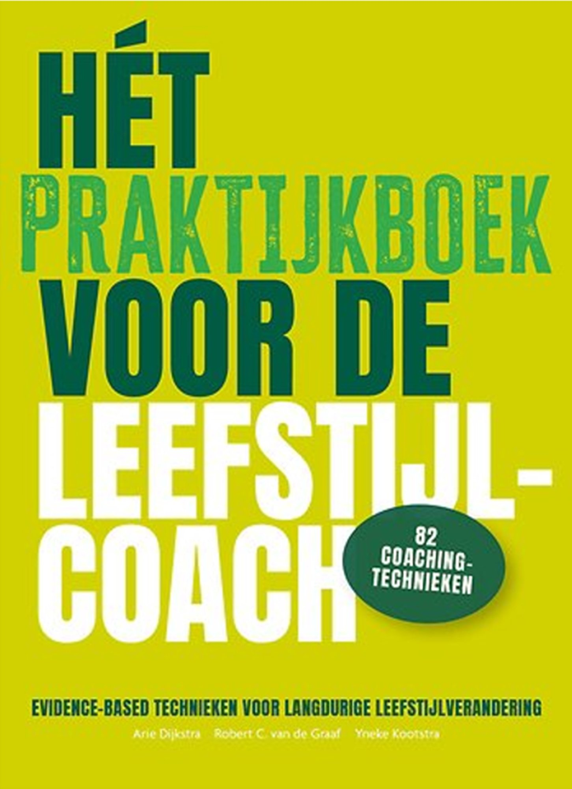

Case 1
Als het gaat om leefstijl, heeft het vrijwel alleen zin als gezond gedrag heel lang wordt volgehouden. Welke keuzes maak jij als coach? Hieronder 10 korte cases.
Elke case beschrijft een coachingssituatie die je als leefstijlcoach kunt tegenkomen in de praktijk.
Per case kies jij de aanpak die jou het meest aanspreekt. Na alle 10 cases zie je jouw totaalscore.
Je krijgt géén feedback per vraag. Pas na alle 10 cases zie je je totaalscore en persoonlijke feedback.
Daar staat alles in uitgelegd — evidence-based technieken voor langdurige leefstijlverandering, met 82 coachingtechnieken.

82 coachingtechnieken — evidence-based technieken voor langdurige leefstijlverandering
Bekijk bij Bruna